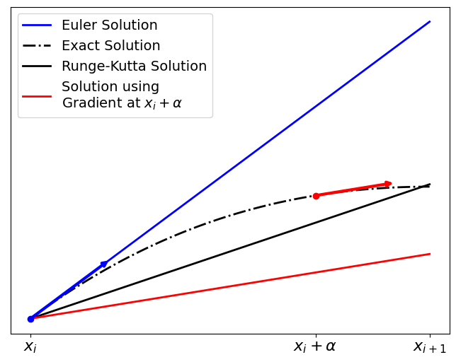
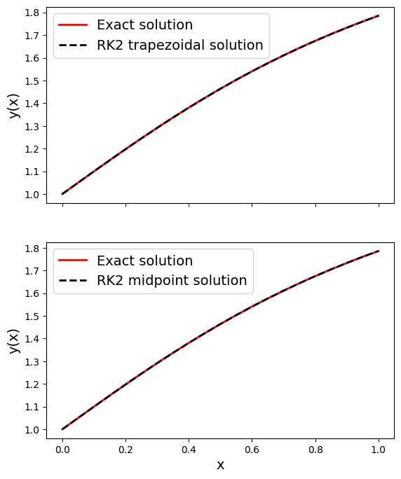
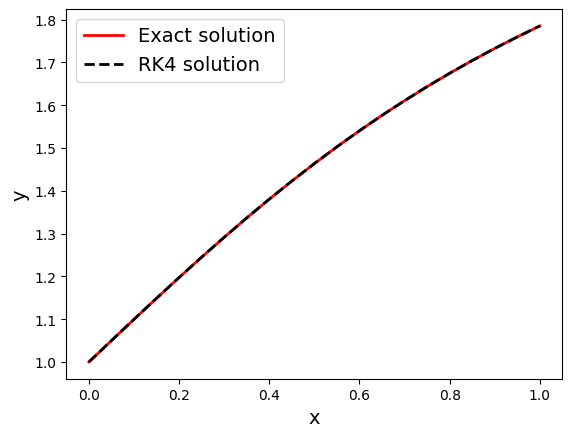
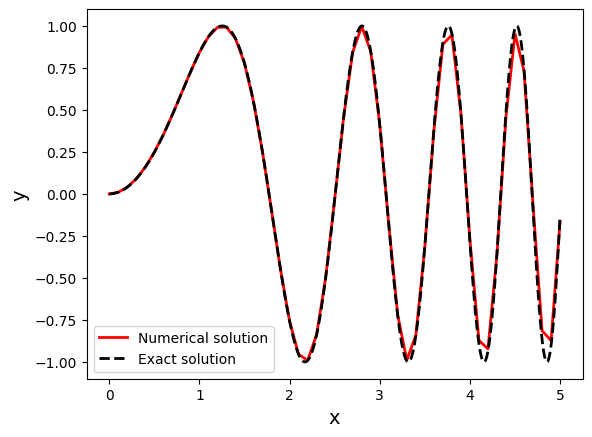

16.4 Runge-Kutta Methods#
The aforementioned Euler’s method is the simplest single step ODE solving method, but has a fairly large error. The Runge-Kutta (RK) methods are more popular due to their improved accuracy, in particular 4th and 5th order methods.
Outline of the Derivation#
The idea behind Runge-Kutta is to perform integration steps using a weighted average of Euler-like steps. The following outline [RK1] is not a full derivation of the method, as this requires theorems outside the scope of this course.
Second Order Runge-Kutta (RK2)#
We shall start by looking at second order Runge-Kutta methods. We want to solve an ODE of the form
on the interval \([x_i, x_{i+1}]\), where \(x_{i+1} = x_i + h\), with a given initial condition \(y(x = x_i) = y_i\). That is, we wish to determine the value of \(y(x_{i+1}) = y_{i+1}\). We start by calculating the gradient of \(y\) at 2 places:
The start of the interval: \((x_i, y_i)\)
A point inside the interval, for which we approximate the \(y\) value using Euler’s method: \((x_i + \alpha h, y_i + \alpha h f(x_i, y_i))\), for some choice of \(\alpha\).
We then approximate the value of \(y_{i+1}\) using Euler’s method with each of these gradients:
\(y_{i+1} \approx y_i + h f(x_i, y_i)\)
\(y_{i+1} \approx y_i + h f(x_i + \alpha h, y_i + \alpha h f(x_i, y_i))\)
The final approximation of \(y_{i+1}\) is calculated by taking a weighted average of these two approximations:
where \(c_1 + c_2 = 1\) is required.

Now, how do we go about choosing good values for \(c_1\), \(c_2\) and \(\alpha\)? If we Taylor expand the left-hand side of the equation above, and the last term on the right-hand side gives us the relation:
This still gives us a free choice of one of the parameters. Two popular choices are:
The trapezoid rule: \(c1 = c2 = \tfrac{1}{2}\) and \(\alpha = 1\), which yields:
The midpoint rule: \(c1 = 0\), \(c2 = 1\) and \(\alpha = \tfrac{1}{2}\), which yields:
Both of these methods have an accumulated/global truncated error of \(O(h^2)\), as opposed to the Euler method’s \(O(h)\) [RK1] (remember that an \(O(h)\) trend dominates \(O(h^2)\) for \(0<h<1\), i.e. \(O(h)\) will have higher error in general).
Worked Example
Consider the ordinary differential equation:
with the initial condition \(y = 1\) at \(x = 0\).
This has the exact solution:
which we can compare our results to.
Let’s solve this ODE up to \(x = 1\) for both the trapezoidal and the midpoint rule RK2 methods.
import numpy as np
import matplotlib.pyplot as plt
x0, y0 = 0, 1 #initial conditions
h = 0.05
x_end = 1
#Differential equation
def f(x, y):
return 1/(1 + x*x)
#Exact solution
def y_exact(x):
return 1 + np.arctan(x)
#Constructing the arrays:
x_arr = np.arange(x0, x_end + h, h) #make sure it goes up to and including x_end
y_trapz = np.zeros(x_arr.shape) #trapezoidal rule solution
y_trapz[0] = y0
y_mid = np.zeros(x_arr.shape) #midpoint rule solution
y_mid[0] = y0
#Runge-Kutta method
for i,x in enumerate(x_arr[:-1]):
#Trapezoidal update step
f_trapz = f(x, y_trapz[i])
y_trapz[i + 1] = y_trapz[i] + 0.5 * h * ( f_trapz + f(x + h, y_trapz[i] + h * f_trapz) )
#Midpoint update step
y_mid[i + 1] = y_mid[i] + h * f(x + 0.5 * h, y_mid[i] + 0.5 * h * f(x, y_mid[i]))
#Plotting the solutions
fig, ax = plt.subplots(2, 1, sharex = True, figsize = (6.4, 8))
##Plotting trapezoidal
ax[0].plot(x_arr, y_exact(x_arr), color = 'red', label = 'Exact solution', linewidth = 2)
ax[0].plot(x_arr, y_trapz, '--k', label = 'RK2 trapezoidal solution', linewidth = 2)
ax[0].set_ylabel('y(x)', fontsize = 14)
ax[0].legend(fontsize = 14)
##Plotting midpoint
ax[1].plot(x_arr, y_exact(x_arr), color = 'red', label = 'Exact solution', linewidth = 2)
ax[1].plot(x_arr, y_mid, '--k', label = 'RK2 midpoint solution', linewidth = 2)
ax[1].set_ylabel('y(x)', fontsize = 14)
ax[1].set_xlabel('x', fontsize = 14)
ax[1].legend(fontsize = 14)
plt.show()

Fourth Order Runge-Kutta (RK4)#
As mentioned, the more popular Runge-Kutta method is the fourth order (for which we will not cover the derivation):
where the \(k\) values are the slopes:
\(k_1\) is gradient value at the left of the interval. \(k_2\) is the gradient at the midpoint of the interval, approximated using \(k_1\). The \(k_3\) value is the gradient at the midpoint of the interval using \(k_2\) to approximate it. \(k_4\) is the value of the gradient at the right end of the interval using \(k_3\) to approximate it.
This method has an accumulated error of \(O(h^4)\)
Worked Example
Again, consider the ordinary differential equation:
with initial conditions \(y = 1\) at \(x = 0\), and the exact solution:
which we can compare our results to. Let’s solve this ODE up to \(x = 1\) using the RK4 method.
import numpy as np
import matplotlib.pyplot as plt
x0, y0 = 0, 1 #initial conditions
h = 0.05
x_end = 1
#Differential equation
def f(x, y):
return 1/(1 + x*x)
#Exact solution
def y_exact(x):
return 1 + np.arctan(x)
#Constructing the arrays:
x_arr = np.arange(x0, x_end + h, h)
y_arr = np.zeros(x_arr.shape)
y_arr[0] = y0
#Runge-Kutta method
for i,x in enumerate(x_arr[:-1]):
#k values
k1 = f(x, y_arr[i])
k2 = f(x + 0.5*h, y_arr[i] + 0.5*h*k1)
k3 = f(x + 0.5*h, y_arr[i] + 0.5*h*k2)
k4 = f(x + h, y_arr[i] + h*k3)
#update
y_arr[i+1] = y_arr[i] + h * (k1 + 2*k2 + 2*k3 + k4) / 6.0
#Plotting the solution
fig, ax = plt.subplots()
ax.plot(x_arr, y_exact(x_arr), color = 'red', label = 'Exact solution', linewidth = 2)
ax.plot(x_arr, y_arr, '--k', label = 'RK4 solution', linewidth = 2)
ax.set_xlabel('x', fontsize = 14)
ax.set_ylabel('y', fontsize = 14)
ax.legend(fontsize = 14)
plt.show()

Coupled and Higher Order ODEs#
As we have discussed in a previous page, higher order ODEs can be reduced to a collection of coupled first order ODEs, for example:
As we have seen, the Euler’s method solution for this is fairly simple. For the RK4 method, things are slightly more complicated. We must decide how to calculate the \(k\) values.
For the step from \(x_n\) to \(x_{n+1}\):
Note that the \(y_j\) variables are not explicitly dependent on each other, but on the independent variable \(x\). Thus we do not have free choice over which \(y_j\) values to use when examining another for a particular value of \(x\). For any change in \(x\), we expect simultaneous change in all of the \(y_j\). For this reason, when calculating the \(k_j\) values for a particular \(y_j\), we need to consider the changes in the other \(y_l\).
This looks more complicated then it is to apply in practice. All we need to do is vectorize the solution, as in the previous section. We can represent all the \(y_j\) as a vector:
the ODE can thus be represented as:
and an update step as:
where:
Note that we can write:
with this in mind, we can simply write the \(k\) values as:
Worked Example
Consider the third order differential equation:
with the initial conditions: \(y(x = 0) = 0\), \(y^\prime(0) = 0\) and \(y^{\prime\prime}(0) = 2\).
This has an exact solution of:
which we shall use to test our numerical result.
We shall solve this up to \(x = 5\) with steps of size \(h = 0.1\).
First we reduce this to a system of first order equations by introducing the variables \(y_0(x) = y(x)\), \(y_1(x) = y^\prime(x)\) and \(y_2(x) = y^{\prime\prime}(x)\):
import numpy as np
import matplotlib.pyplot as plt
x0 = 0 #initial conditions
y0 = np.array([0, 0, 2]) #initial conditions
h = 0.1
x_end = 5
def f(x, y):
return np.array([
y[1],
y[2],
-12*x*y[0] - 4*x*x*y[1]
])
def y_exact(x):
return np.sin(x*x)
#Constructing the arrays:
x_arr = np.arange(x0, x_end + h, h)
y_arr = np.zeros((x_arr.size, len(y0)))
y_arr[0, :] = y0
#Runge-Kutta method
for i,x in enumerate(x_arr[:-1]):
y = y_arr[i,:]
#k values
k1 = f(x, y)
k2 = f(x + 0.5*h, y + 0.5*h*k1)
k3 = f(x + 0.5*h, y + 0.5*h*k2)
k4 = f(x + h, y + h * k3)
#update
y_arr[i+1, :] = y + h * (k1 + 2*k2 + 2*k3 + k4) / 6.0
#Plotting the solution
fig, ax = plt.subplots()
ax.plot(x_arr, y_arr[:, 0], color = 'red', linewidth = 2, label = 'Numerical solution')
x_exact = np.linspace(x_arr[0], x_arr[-1], 1000) #x_arr is too sparse to properly plot the curve
ax.plot(x_exact, y_exact(x_exact), 'k--', linewidth = 2, label = 'Exact solution')
ax.set_xlabel('x', fontsize = 14)
ax.set_ylabel('y', fontsize = 14)
ax.legend()
plt.show()
